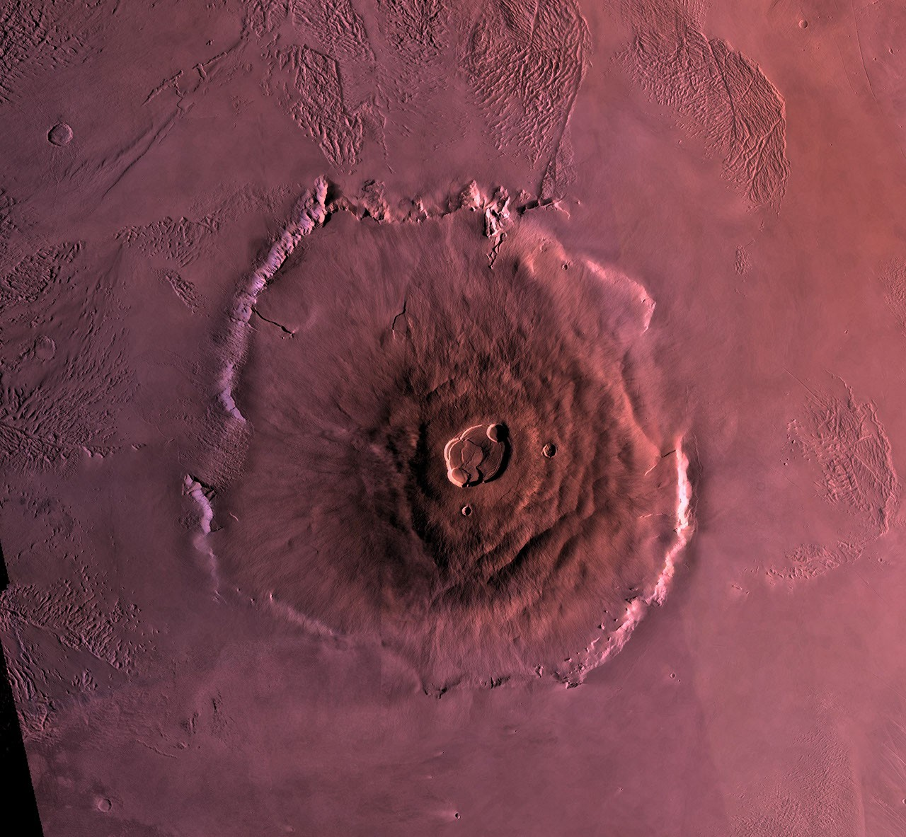
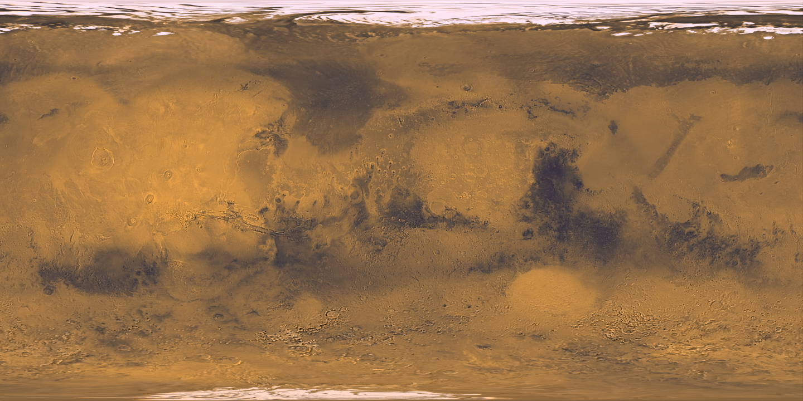
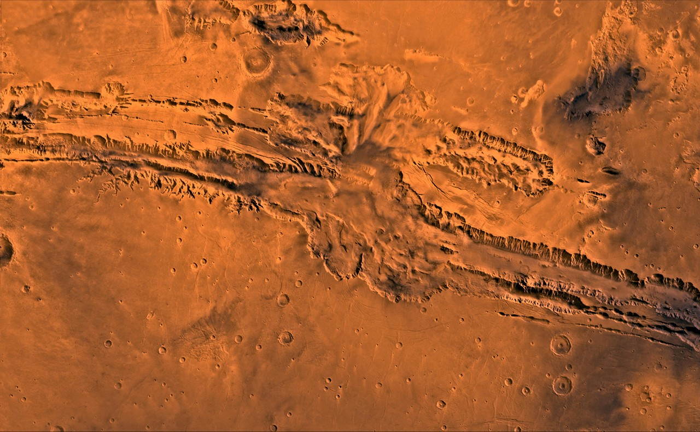
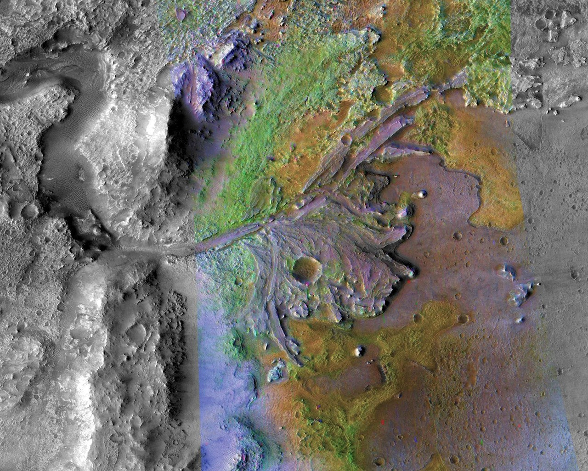
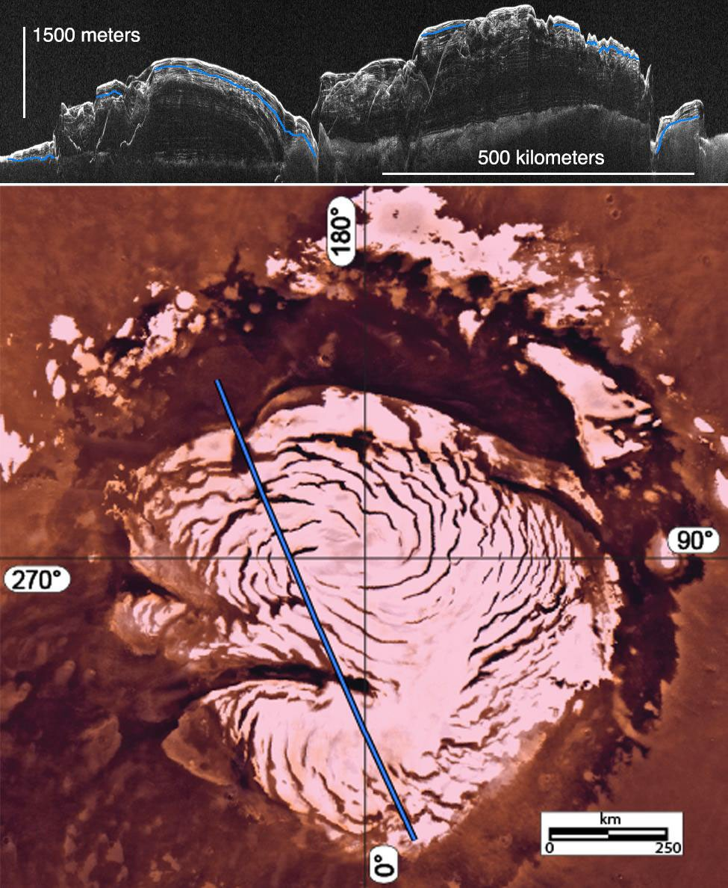

Shield volcano
奥林帕斯山 · 火山塑造的巨人
奥林帕斯山是一座巨型盾状火山，底部宽约 600 千米。广阔、平缓的侧坡由一次次流出的熔岩堆叠而成，顶部的破火山口记录了岩浆活动与塌陷。
它提醒我们，今天看似安静的火星曾有强烈的内部活动。长期在同一区域积累的喷发产物，造就了这座规模惊人的火山。
NASA/JPL/USGS · PIA00300 · 原始资料 ↗Mars observation system · Solar laboratory
或许曾拥有奕奕生机的红色荒原。
火星，太阳系中距离太阳第四近的行星，与金星与火星一同构成了太阳系的岩石行星带，也是太阳系宜居带最外侧的一颗星球。它与地球一样是一颗岩石行星，拥有两极冰盖，两颗卫星：火卫一与火卫二，宇宙维度上，它与地球高度的相似与相近让这颗行星在人类的想象中留下了鲜明的轮廓。
那里的一天约为24小时39分钟，一年却长达约687个地球日。它约 25° 的自转轴倾角带来了与地球相近的四季，火星年的漫长也使得季节大体比地球上更加悠长；火星同样拥有大气，但十分稀薄：稀薄的大气以二氧化碳为主，平均地表气压不到地球的 1%，保温能力很弱，表面重力约3.71m/s²，约为地球的九分之四，拥有熔融硅酸盐地幔，一个液态金属外核和轻质的结晶铁镍固态核心，没有类似地球的板块构造。
火星上没有火，也不是主要由红色岩石构成。它呈红色的主要原因是火星地表广泛存在富含铁的矿物。岩石经过长期风化后产生非常细小的氧化铁颗粒，这些颗粒混入尘埃，使火星呈现典型的橙红色、红褐色，火星地表物质以暗色的玄武岩，沙粒与火山物质为主，因此在这种富含氧化铁的尘埃分布较少的地方，火星地表便呈现较深的色调，随着风暴卷起沙尘，火星上甚至会出现一部分地区由暗变红或由红变暗的现象。
火星还有一个非常明显的南北地形二分性，即南部地形以古老、海拔较高、撞击坑密集的高原为主，北部则拥有着年轻、低平、撞击坑较少的广阔平原，这一情况的成因科学家尚在研究。
单纯从地貌来看，火星可能是太阳系里与地球最容易产生“熟悉感”的行星之一。它同时拥有山脉、峡谷、火山、河谷、三角洲、冲积扇、沙丘、冰川遗迹、撞击坑、高原和平原。但它同时又把很多地貌发展到了远超地球的尺度，例如奥林匹斯山，水手大峡谷。
接着，我们来到了火星最有趣的地方：火星有水。今天的火星表面寒冷、干燥，气压又非常低，液态水难以长期稳定存在，但几十年的轨道器和着陆探测已经发现了大量古代水活动留下的证据。它曾经至少在部分时期拥有更厚的大气，更温暖的环境以及稳定存在的一大堆液态水。
现代火星的水主要储存于两级的冰盖，剩下的部分储存于地下水冰，含水矿物与大气中的水蒸气，现代观点认为火星已经失去了能够让大量液态水长期稳定存在于地表的环境，但仍保存着相当数量的水冰。火星大气的消失简而言之主要涉及火星磁场的消失，高速太阳风裹挟火星外层大气出走最终导致火星大气逸散，但具体的气候演化涉及比较复杂的长期机制。
即使失去大量大气,火星的气象活动仍然相当活跃。火星仍然拥有真正意义上的天气系统，包括风、云、霜、沙尘暴、尘卷风和气压季节变化，尤其著名的是沙尘暴。一些年份，区域性沙尘暴可以不断扩大，最终演变成覆盖火星大部分区域的全球性沙尘事件，它也是不少人类巡视器与固定科学平台损坏的元凶。火星上还存在巨大的尘卷风（dust devil），巡视器经常能够拍摄到这些移动的旋风。
火星还曾经拥有全球性磁场，也正是这个磁场保护了古代火星的温和环境。今天的火星虽然已经没有类似地球那样的全球偶极磁场，但火星部分古老地壳仍保留着强烈的剩磁，这说明早期的火星内部可能存在过能够产生全球磁场的类发电机机制。
“火星上有生命吗?”这是属于人类文明的问题，但很遗憾——目前没有。需要明确的是，发现生命必须的有机物，DNA等地球生命遗传物质的前体甚至某天发现DNA分子本身，都不算发现火星生命。人类对火星探测的主题尚在“宜居环境中是否真的产生过生命？”阶段，这也是为什么我们聪明的读者可能会在后面的探测成果中敏锐地注意到，巡视器们并没有奔波于寻找生命的存在证明，而是关注宜居环境本身。
火卫一与火卫二围绕这颗红色星球运行。在地球的天空中，火星会在“冲”的前后变亮和变大，并相对太阳进行短暂的逆行。下方的演示可以帮助你理解火星视运动里发生的这些变化。
为什么火星如此重要?为什么人类会执着于探测火星？火星真正吸引人的地方并不是单纯因为它“离地球近”，而是因为它像是一个与地球走上不同道路的行星演化实验，而且这个实验的变量控制远比金星与地球来得严格。大约四十多亿年前，地球与火星的环境几乎如出一辙，后来两颗行星却走向完全不同的结局。地球最终形成了拥有海洋、板块构造、浓厚大气和庞大生物圈的世界。火星则逐渐失去适合大量液态水长期存在于表面的条件，成为今天这个寒冷、干燥、低气压的荒漠行星。
因此，研究火星，实际上是在同时研究三个问题：火星过去发生了什么?地球为什么没有变成今天的火星?一个曾经可能宜居的行星，是否真的产生过生命?而第三个问题一旦获得可靠答案——无论答案最终是“有”还是“没有”，都必将深刻影响我们对太阳系乃至宇宙中生命普遍性的理解。
拖动旋转 · 滚轮或双指缩放

当前设备无法显示三维模型，已显示全球贴图。ROVER FIELD NOTES · 01—05
选择一辆巡视器，查看它的旅程，以及岩石、水与气候为我们留下的线索。
· 原始地图 ↗
Sol 为火星日。全球地图仅用于定位着陆区域；局部地图保留来源机构的投影、比例尺与图例，各路线档案的时间范围不同。科研成果依据所列资料整理，不代表已经发现火星生命。
AHEAD · 01—04
从这里了解人类求索五百年的过去与未来。
古代人类很早就已经观察到了火星。从地球上看，其亮度变化诡异无常，运行轨迹复杂多变，东方与西方文明均赋予了其浓厚的信仰色彩。希腊称其为“阿瑞斯”，罗马称其为“玛尔斯”，意即战神，并将火星的运行与正在进行和未来将发生的战事走向相关。中国古代称其为“荧惑”，“荧”即“荧荧似火”，形容其明亮，“惑”即指其行踪捉摸不定，视运动轨迹奇怪，古代中国星占学也将其与战争、疾病、饥荒等灾祸相关。
1610年，伽利略首次使用望远镜直接观测火星，1659年，荷兰天文学家惠更斯绘制出了第一张可辨认的火星图，火星由遥不可及的神明变为人类认知世界中的天体。1666年，卡西尼观测到火星的冰层极冠并记录了其的周期性变化，到了18世纪末，天文学家赫歇尔确定了火星的自转周期和自转轴倾角，人类终于在宏观的层次上认识了火星。
火星上的“文明”诞生于1877年的火星大冲。天文学家斯基亚帕雷利观察到火星表面有许多暗线连接着许多暗色的区块，他将其命名为“canali"，意为天然的水道、沟渠或海峡。而在这一词汇被翻译为英文时，译者将其译为了"canals"，意为运河。从字面意思解读的话，如果有了运河，那就必然有开凿运河的“人”与“文明”。这一错误使得美国天文学家洛厄尔对“火星文明”存在产生了浓厚的兴趣，他在自建的天文台中花费十五年，拍摄了数千张火星照片用以寻找“火星文明”。
洛厄尔结合其观测数据，构建了一个生活在荒原之上，依赖庞大的运河网络与湖泊生活的地外文明以及它存在的理论基础和理性论据。通过《火星》(1895)与《火星及其运河》(1909)等著作，他将这一理论推向了大众。随后“火星文明”这个概念便由科学假说走向了科幻狂热，人们逐渐接受了“火星文明”的存在。到了20世纪早期，大部分美国人对这个地外文明的存在已然深信不疑，甚至在1938年时引发了著名的“火星人”恐慌。
随着1947年柯伊伯确认火星大气主要成分是二氧化碳，光谱分析与雷达观测的数据也表明火星表面干燥而荒凉，碳基生物难以存活，人类对“火星人”存在的好奇逐渐转向“火星生命”的存在。冷战拉开帷幕后，苏联与美国对科技应用与开发的庞大投入与激烈竞赛使得航天技术发展速度变得前所未有，这也为探索火星提供了新的可能。
1960年，苏联率先发射两个飞掠探测器，同年美国发射一个，全部失败。1962年苏联“火星”系列探测器开始发射，该项目至1973年为止共七次发射，几乎全部失败，其中火星3号是人类第一个在火星表面软着陆并发出信号的探测器。美国对应的项目为“水手”系列，水手4号于1965年成功飞掠火星并传回21张照片，显示了火星表面布满撞击坑，也没有所谓的“运河”，“火星人”存在说彻底覆灭。1971年水手9号成功进入火星轨道，是人类第一个环绕其他行星的探测器，它测绘了约70%的火星表面。
1976年，美国维京1号与维京二号（也译为海盗1号和海盗2号）成功着陆火星，进行了详细的测量，包括生物存在性实验与气象、土壤、大气等诸多实验。关于生物存在实验，结果复杂，有部分实验结果指向“火星仍有生命存在”，但多数科学家认为这些结果可以用非生物化学反应解释，未能确证火星生命存在。1988年苏联发射福布斯1号与福布斯2号探测火卫一，均失败，这是苏联最后一次执行与火星相关的任务。
在苏联解体后，美国逐渐主导了人类对火星的探测，火星也成为了人类探索地球之外最重要的目标。在1990到2010年间，美国携手欧洲与日本等国家发射了诸多勘测卫星与轨道侦察器，如发现火星极光的火星快车号与发现地下氢信号的火星奥德赛号，这些探测器对火星地理进行了深入的研究，发现了包括古河床、极地冰盖、原始沉积层、地下水冰等重要地质特征，并测绘了高精度地图。
1997年，火星探路者号着陆，其搭载的索杰纳号是人类第一个在火星工作的巡视器，这为未来的巡视器投放提供了宝贵的气象环境，并探索和验证了诸多以后应用在其它巡视器上的技术。
2004年，美国发射了勇气号和机遇号火星车，它们代表着当时人类航天技术的最高成就。它们发现了于酸性水体中形成的赤铁矿球，水蚀岩石、可能温和宜居的古代湖泊与古代热泉，这些发现都表明火星地表存在过一个可能十分温和宜居的水环境。它们还记录了火星上的沙尘暴，发现了人类在其他星球上的第一颗陨石，并首次在火星上拍到了地球的照片。
2012年，好奇号火星车登陆火星，它在火星约35亿年前的泥岩中探测到了多种有机分子，这些分子是已知碳基生命的必要成分；它还证实了古代火星存在原始碳循环，发现了甲烷的季节性波动，其中后者可能暗示火星活跃地质活动或者某种微生物的存在。一次意外中，它发现了纯硫晶体，这昭示了古代火星曾经存在活跃硫循环，为古代火星的宜居性研究提供了新的线索。近期它发现的未知卵状结合地貌也揭示了火星上的水文历史远比人类想象的更加复杂。
2018年，NASA的洞察号探测器成功着陆火星，确认了火星地壳与内部圈层的结构，发现了火星的液态金属外壳和一个轻质的结晶铁镍固态核心，并确认了火星曾在数十亿年前有活跃的磁场活动。同年，毅力号核动力火星车也成功登陆火星，它发现了大分子碳与氨基酸，被认为可能是远古微生物的代谢产物遗迹，这被NASA称为“最接近发现火星古代生命的一次探索”；毅力号同时肩负着携带土壤样本返回地球的任务，它携带的部分样本被认为存在远古微生物的证据；它还搭载了人类第一架地外飞行器“机智号”，它完成了人类在地球大气以外的首次动力飞行。
2021年，中国的祝融号火星车登上火星，它的探测仪在地下发现了火星的古代海洋沉积结构，并指出火星表层在约7.5亿年前仍存在显著水体活动。在后续的行进中还发现了含水硫酸盐的矿物。研究分析认为，这是由霜降或降雪融化形成的含盐液态水留下的痕迹，说明现代火星低纬度地区仍然可能存在潮湿环境。
2025年，NASA发射了 逃逸与等离子体加速和动力学探测器，预计2026年11月入轨，这个项目由两枚探测器Blue与Gold组成，未来将从不同位置测量火星的等离子体、磁场和高层大气，从而区分太阳风变化和火星磁层响应之间的因果关系，旨在寻找火星大气与火星磁环境消失的原因。
人类对火星的探索仍在继续。
NASA与ESA曾计划“火星采样返回”计划，将毅力号采集的样本带回地球，但最终时间表尚未确定。
中国计划在2030年发射天问三号，主要采集火星地表2米以下的土壤样本，共收集500克火壤并返回地球，同时投放一个轨道器和一个中转站，用于勘察火星地表环境并实验地火通讯环境，为将来的载人登火作准备。
日本也声明将在2026年10月执行MMX（火星卫星探测计划），这个任务将一次性完成探测火卫一与火卫二，采样火卫一并返回以及投放火卫一巡视器IDEFIX，旨在寻找火卫一与火卫二的起源，并验证地球—火星圈往返、火星卫星着陆、采样和返回等技术，为更远期的火星探测积累经验。
ESA也计划于2028年末与SpaceX和NASA合作发射罗莎琳德·富兰克林号火星车，它拥有同位素电池与太阳能板双重动力源，更加适应火星的气候变化，最关键之处在于，它所携带的钻探杆将能够钻入火星地下最深约2米处进行取样，这个深度的材料受到宇宙辐射和表面光化学破坏的程度远低于火星表面，因此更有机会保存古老有机物或潜在生物标志物。
NASA、SpaceX、中国都正在设想载人火星任务，其中 NASA 已经启动了第四轮火星地表基地生存测试，用以确定载人火星任务的时长与建立火星基地的可行性。SpaceX也宣称星舰将作为未来火星的运输工具，并给出了配套的太空加油方案与火星基地概念图。但技术、生命保障、辐射防护等难题仍然巨大，载人火星计划仍然胎在腹中。
走过五百年，人类对火星的探索依然在继续。寻找生命、探索火星演化、论证火星的宜居性，将继续驱动人类未来数十年的探索。

奥林帕斯山是一座巨型盾状火山，底部宽约 600 千米。广阔、平缓的侧坡由一次次流出的熔岩堆叠而成，顶部的破火山口记录了岩浆活动与塌陷。
它提醒我们，今天看似安静的火星曾有强烈的内部活动。长期在同一区域积累的喷发产物，造就了这座规模惊人的火山。
NASA/JPL/USGS · PIA00300 · 原始资料 ↗
水手号峡谷系统长约 4,000 千米，部分地段深达数千米。轨道影像中，陡峭崖壁、分支峡谷与崩塌堆积构成了复杂的地形。
它的形成与地壳伸展、断裂和后期侵蚀等过程有关，不能简单理解为一条河流切出来的峡谷。岩层和地形共同保存着火星地壳演化的线索。
NASA/JPL-Caltech/USGS · Viking · 原始资料 ↗
杰泽罗陨石坑的西侧，古老河流把砂砾与细小沉积物带入湖泊。水流减速后，沉积物逐渐形成扇形的三角洲。
这里的黏土与碳酸盐矿物，让它成为研究古代水环境的重要地点。认识曾经的宜居环境，需要把岩石成分、沉积层序与地形放在一起研究。图像以增强色彩突出不同矿物。
NASA/JPL-Caltech/MSSS/JHU-APL · PIA23239 · 原始资料 ↗
火星极区保存着水冰和尘埃组成的层状沉积，季节性的二氧化碳霜也会随温度变化凝结与升华。它们记录着火星气候的反复变化。
图中上部是雷达探测到的北极冰盖内部结构，下部是极冠影像。结合表面照片与地下雷达回波，研究者可以追踪冰层的沉积、侵蚀与气候历史。
NASA/JPL-Caltech/Sapienza University of Rome · PIA20029 · 原始资料 ↗Volcanoes · Craters · Ice · Water · Wind
图片来源：塔尔西斯火山群 ↗ · 南半球高地撞击坑群 ↗ · 极地冰盖 ↗ · 水成地貌 ↗ · 风成地貌 ↗ · ESA 图片许可
俯视
由上方日心轨道时间轴统一控制：播放、拖动进度条和构型跳转都会同步更新这里。
这里展示 2025 年冲日前后的视运动，并与日心轨道的“开始逆行、冲、结束逆行”三个事件对齐。两图采用不同的轨道近似，日期按事件对应，并非共用精密星历；超出本图时段时会显示提示。横纵坐标使用相同角度比例，银河背景未与真实星区配准。
采用 JPL 1800–2050 年近似轨道根数，解开普勒方程，计算火星与地球的位置差，再投影到 J2000 黄道坐标。包含偏心率与倾角；以地月质心近似地心，未修正光行时、光行差与观测地点。日期按 UTC 显示，留点为黄经变化率过零的近似时刻。上方会合周期演示仍使用简化圆轨道。
轨道采用共面圆轨道近似，地球与火星周期分别为 365.256 和 686.980 天。火星真实轨道具有明显偏心率，因此实际每次冲的距离、亮度和时间间隔会不同。三维球体大小、自转速度及相位图的尺寸均为展示比例。
视星等使用简化光度公式，显示的是教学估算；第 0 天为假定合日，不对应具体日期，也不替代观测星历。视运动图采用 2025 年近似椭圆轨道位置，与圆轨道演示按两次留点及冲对齐；日期为教学事件对应，非同一套精密星历。
资料：NASA 火星资料 · JPL 基本参数 · NASA/USGS 全球贴图。影像来源标注于各卡片。